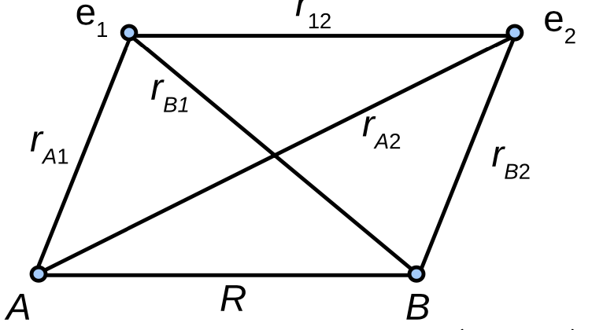
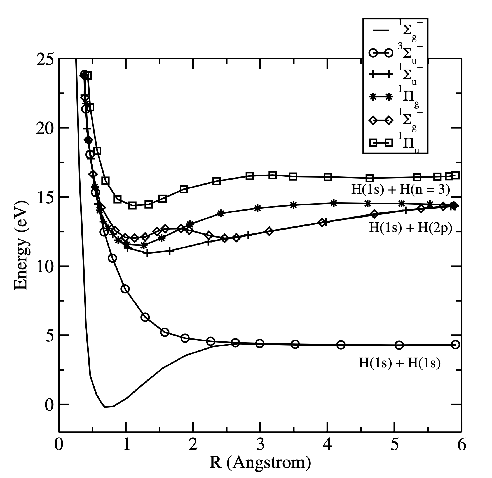

Chem 3240 · Lecture 8.3

\[\begin{aligned} H = &-\frac{\hbar^2}{2m_e}(\Delta_1 + \Delta_2) \\ &+ \frac{e^2}{4\pi\epsilon_0}\Big(\tfrac{1}{R} + \tfrac{1}{r_{12}} \\ &- \tfrac{1}{r_{A1}} - \tfrac{1}{r_{A2}} - \tfrac{1}{r_{B1}} - \tfrac{1}{r_{B2}}\Big) \end{aligned}\]
\[1\sigma_g(1) = \frac{1}{\sqrt{2(1+S)}}\big(1s_A(1) + 1s_B(1)\big)\]
\[\psi_{MO}^{(1\sigma_g)^2} = \frac{1}{\sqrt{2}}\begin{vmatrix} 1\sigma_g(1)\alpha(1) & 1\sigma_g(1)\beta(1)\\ 1\sigma_g(2)\alpha(2) & 1\sigma_g(2)\beta(2) \end{vmatrix}\]
\[\psi_{MO}^{(1\sigma_g)^2} = \frac{(1s_A(1)+1s_B(1))(1s_A(2)+1s_B(2))}{2\sqrt{2}(1+S_{AB})}\big(\alpha(1)\beta(2) - \alpha(2)\beta(1)\big)\]
\[E(R) = 2E_{1s} + \frac{e^2}{4\pi\epsilon_0 R} - \textnormal{integrals}\]
| Quantity | Simple MO | Experiment |
|---|---|---|
| \(R_e\) | 84 pm | 74.1 pm |
| \(D_e\) | 255 kJ/mol | 458 kJ/mol |

\[\psi = c_1\,\psi_{\textnormal{covalent}} + c_2\,\psi_{\textnormal{ionic}}\]
\[\psi_{\textnormal{covalent}} = 1s_A(1)1s_B(2) + 1s_A(2)1s_B(1)\] \[\psi_{\textnormal{ionic}} = 1s_A(1)1s_A(2) + 1s_B(1)1s_B(2)\]
Neutral \(H_2\) has no analytic solution because of \(1/r_{12}\), so we place two opposite-spin electrons in \(1\sigma_g\) as a Slater determinant. This simple LCAO-MO already binds the molecule, and separating ionic from covalent terms, then adding configuration interaction, drives the bond length and binding energy to essentially exact agreement.
Chem 3240 · Quantum Mechanics